O guia completo, passo a passo, para quem vai usar o sistema pela primeira vez — do primeiro acesso ao acompanhamento de cada pessoa até a recepção como membro.
Leia esta parte com calma uma vez. Ela explica a ideia do sistema e as palavras que aparecem em todas as telas.
O Integração de Visitantes é a ferramenta da equipe para cuidar de cada pessoa que visita a igreja, do dia em que ela chega até o dia em que é recebida como membro.
Toda pessoa que visita a igreja ganha uma ficha. Nessa ficha, a equipe vê em que ponto a pessoa está, o que precisa ser feito agora e tudo o que já foi conversado com ela. Assim:
O sistema funciona no navegador, no celular ou no computador, e tudo o que você registra é salvo automaticamente na nuvem. O que você anota no celular aparece no computador da coordenação na mesma hora.
O sistema existe para que nenhuma pessoa que visitou a igreja fique sem cuidado. Cada clique representa alguém sendo lembrado, acolhido e acompanhado.
| Item | Detalhe |
|---|---|
| Celular ou computador | Qualquer celular (iPhone ou Android) ou computador com internet. |
| Navegador | Safari (iPhone), Chrome (Android ou computador), Edge ou Firefox. Não precisa instalar nenhum aplicativo. |
| Um e-mail seu | Ele será o seu login. Use um e-mail que você consegue abrir, porque o link de troca de senha chega por ele. |
| O endereço do sistema | A coordenação da sua igreja envia o link de acesso. Guarde-o nos favoritos ou coloque o ícone na tela do celular (capítulo 8). |
Cada igreja pode dar nomes próprios a algumas coisas. Os grupos, por exemplo, podem se chamar Conexão, Célula ou PG. Neste manual usamos os nomes padrão.
| Palavra | O que significa |
|---|---|
| Visitante | A pessoa que visitou a igreja e está sendo acompanhada. |
| Ficha | A página de cada visitante, com os dados, a etapa atual e o histórico de contatos. |
| Jornada | O caminho do visitante em 7 passos, do cadastro até virar membro (capítulo 13). |
| Etapa | Em que ponto da jornada a pessoa está agora (ex.: Em contato). |
| Conexão | O grupo pequeno que se reúne nas casas (pode ter outro nome na sua igreja). |
| Responsável | A pessoa da equipe que cuida do visitante na primeira fase (o integrador). |
| Registrar o contato | Anotar no sistema como foi a conversa com o visitante. É o gesto mais importante do dia a dia. |
| Cuidado / crise | Sinal de que a pessoa está passando por sofrimento ou urgência e a liderança precisa ser acionada. |
| Sincronizado | Aviso no topo da tela que confirma que tudo está salvo na nuvem. |
Cada pessoa da equipe tem uma ou mais funções. A função define o que a pessoa vê e o que pode fazer no sistema.
| Função | Papel no acompanhamento |
|---|---|
| Acolhedor | Recebe o visitante no culto e faz o cadastro na hora. |
| Integrador pós-culto | Faz os contatos da primeira semana e encaminha a pessoa ao grupo. |
| Líder de Conexão | Recebe a pessoa no grupo e cuida dela até virar membro. |
| Gestão Integração | Coordena tudo: distribui, acompanha, aprova acessos e configura. |
| Pastores e Gestão Ministerial | Cobertura pastoral; veem tudo, inclusive os casos de cuidado. |
Você faz isso uma única vez. Depois, é só entrar com seu e-mail e senha.
O cadastro tem 3 passos curtos e leva cerca de 2 minutos.
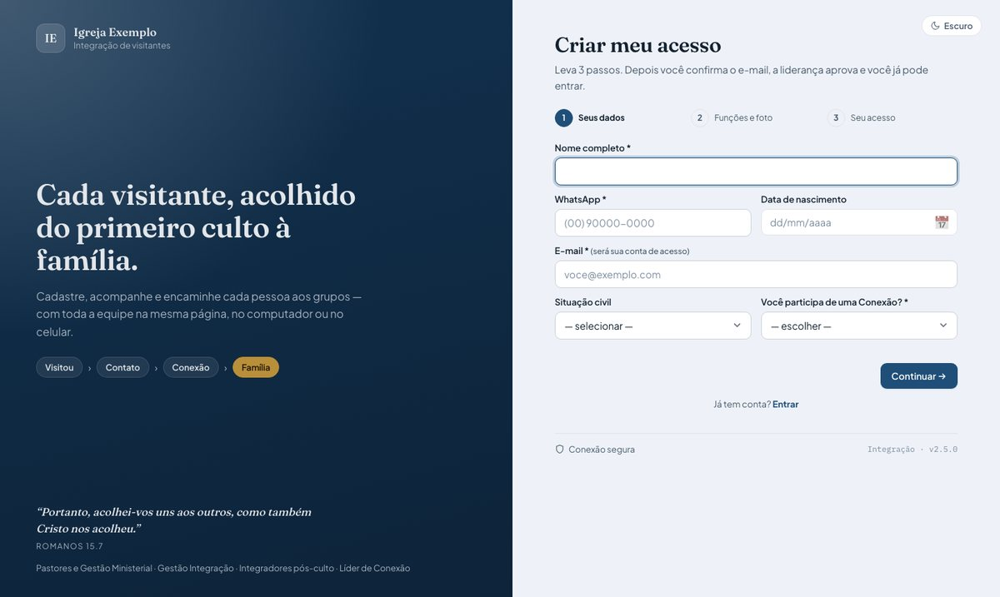
A foto que você escolheu fica guardada no aparelho até o e-mail ser confirmado. Se abrir o link em outro aparelho, tudo funciona, só que a foto não segue junto.
O login é o mesmo para os três sistemas. Se o e-mail já tiver conta, o sistema avisa para entrar com a mesma senha; na primeira vez, ele pede só as informações do Integrar (funções e grupo).
Use ← Voltar para voltar ao passo anterior sem perder o que já foi digitado.
Não use a mesma senha de banco ou do e-mail. E nunca compartilhe sua senha: cada pessoa tem o próprio acesso, e tudo o que é feito fica registrado no nome de quem fez.
Por segurança, ninguém entra sem aprovação. A Gestão Integração ou um pastor confere o seu cadastro, confirma as suas funções e libera o acesso.
Se você tentar entrar antes da aprovação, verá a tela “Quase lá!”. Isso é normal. Assim que for liberado, basta entrar de novo.
| Mensagem na tela | O que fazer |
|---|---|
| Confirme seu e-mail | Falta tocar no link que enviamos para o seu e-mail. Só depois disso o pedido chega à liderança. |
| Quase lá! | Seu pedido foi recebido. Aguarde a aprovação da liderança. Você pode fechar a página: quando for aprovado, é só entrar. |
| Acesso não liberado | A liderança não aprovou (o motivo aparece na tela). Se achar que é engano, fale com a coordenação. |
| Acesso desativado | Sua conta foi pausada. Se você voltou ao ministério, peça à coordenação para reativar. |
Se o sistema encontrar mais de uma pessoa com aquele número (por exemplo, um casal que divide o celular), ele pergunta “qual é você?”. Escolha o seu nome e continue.
Toque em Reenviar e-mail de confirmação, abra o e-mail e toque no link. Depois é só entrar.
Você continua conectado mesmo fechando o navegador. Só precisa entrar de novo se tocar em Sair da conta.
Não é preciso baixar nada na loja de aplicativos. Mas você pode criar um ícone na tela inicial do celular: o sistema passa a abrir em tela cheia, como um aplicativo.
Instalar também é o que permite receber notificações de avisos no iPhone (capítulo 24).
O sistema tem a mesma organização no computador e no celular; só muda o lugar do menu.
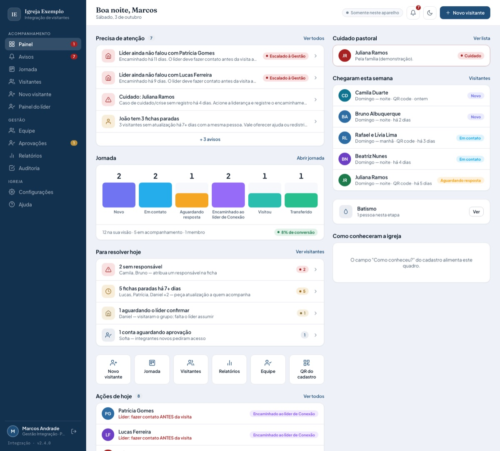
1 2 3 4 5 6 7 8 9 10 11 12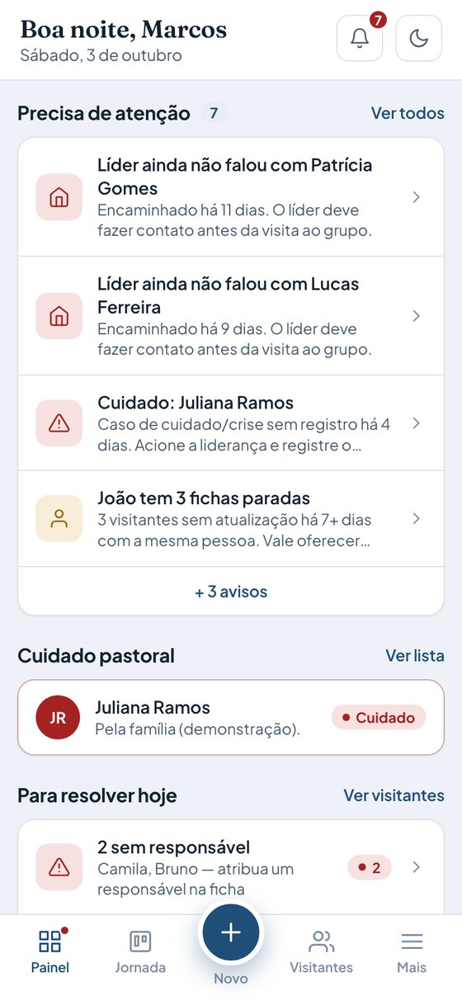
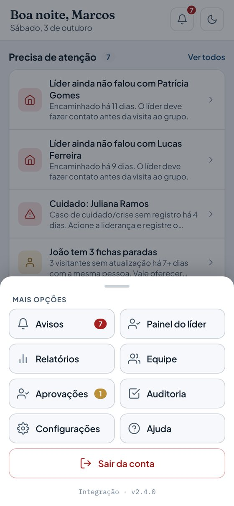
A barra fixa na parte de baixo da tela fica sempre ao alcance do polegar:
| Botão | Para que serve |
|---|---|
| Painel | A tela inicial com o resumo do dia. A bolinha vermelha indica pendências. |
| Jornada | O quadro com as pessoas separadas por etapa. |
| + Novo (centro) | Cadastrar um visitante. É o botão grande e redondo do meio. |
| Visitantes | A lista de todas as pessoas que você acompanha. |
| Mais | As demais áreas (Avisos, Painel do líder, Relatórios, Equipe, Aprovações, Auditoria, Configurações e Ajuda) e o botão Sair da conta. |
No topo, o sino mostra quantos avisos você tem (capítulo 24).
No celular, o Painel mostra primeiro o que é mais urgente: os avisos (“Precisa de atenção”), o cuidado pastoral, depois “Para resolver hoje” e a jornada.
No topo da tela há uma pequena etiqueta que diz se os seus registros já estão salvos na nuvem:
| Etiqueta | Significado e o que fazer |
|---|---|
| Sincronizado | Tudo salvo. O que você fez já aparece para toda a equipe. (No celular, quando está tudo certo, a etiqueta fica escondida para economizar espaço.) |
| Sincronizando… | Salvando agora. Aguarde alguns segundos antes de fechar. |
| Sem conexão · tentar ⟳ | Não foi possível salvar. Verifique a internet. O que você registrou fica guardado no aparelho e é enviado quando a conexão voltar. Toque na etiqueta para tentar de novo. |
| Somente neste aparelho | A nuvem não está ligada neste aparelho. Avise a coordenação. |
Toque no ícone de lua no topo para usar o tema escuro, que é mais confortável à noite. Toque no sol para voltar ao claro. A escolha vale só para o seu aparelho.
Se você atende mais de uma igreja da rede (por exemplo, pastores de rede), aparece o nome da igreja atual com um seletor no topo do menu lateral; no celular, logo abaixo da saudação. Toque nele e escolha a igreja. O sistema recarrega mostrando somente os dados daquela igreja. As igrejas nunca se misturam.
No computador, use o ícone de saída ao lado do seu nome, no pé do menu lateral. No celular, toque em Mais → Sair da conta. Sempre saia quando usar um aparelho emprestado ou compartilhado.
O coração do sistema: como cada visitante é cadastrado, acompanhado, entregue ao grupo e recebido como membro.
Todo visitante percorre o mesmo caminho. Na ficha, o sistema mostra em qual passo a pessoa está e o que fazer agora. Você não precisa decorar nada.
| Passo | O que acontece | Quem faz |
|---|---|---|
| 1Cadastro | A pessoa é cadastrada no culto ou se cadastra pelo QR code. | Acolhedor ou o próprio visitante |
| 21ª semana | Três contatos pelo WhatsApp: segunda (aproximação), quarta (convite ao grupo) e sábado (convite para a celebração). O texto vem pronto. | Integrador pós-culto |
| 3Entrega | A pessoa aceitou conhecer o grupo: o contato passa ao líder, que fala com ela antes da visita. | Integrador → Líder |
| 4Visita | A pessoa participa do grupo pela primeira vez. | Líder |
| 5Líder assume | O líder confirma que assumiu o acompanhamento e registra quando a pessoa começou a frequentar. | Líder |
| 6Batismo | Para quem ainda não é batizado. Quem já é batizado pula este passo. | Líder e Pastores |
| 7Membro | A pessoa é recebida como membro: a jornada está concluída. | Líder e Pastores |
Ao registrar um contato ou tocar no botão do passo, a etapa muda automaticamente, e o sistema mostra a confirmação, por exemplo: “Beatriz avançou: Em contato → Encaminhado ao líder”.
| Etapa | Quando acontece |
|---|---|
| Em espera | A pessoa ficou 14 dias sem responder (prazo ajustável pela Gestão). O sistema move sozinho. Envie apenas informativos; se ela responder, registre o contato e o fluxo volta. |
| Recusou | A pessoa pediu para não ser mais contatada. Os contatos param, com gentileza. Se um dia ela voltar a responder, registre e o caminho reabre. |
| Encerrado | Cadastro inválido ou repetido, ou visitante de passagem (de outra cidade). |
Ao digitar o WhatsApp ou o e-mail, o sistema confere se a pessoa já está cadastrada. Se aparecer o aviso, toque em Abrir a ficha existente em vez de cadastrar de novo.
Com o bairro e o estado civil preenchidos, aparece uma caixa azul com o grupo sugerido (por proximidade e perfil). A escolha final é feita depois, na ficha.
Depois de cadastrar, você é levado direto para a ficha da pessoa. Se você é Acolhedor, aparece a confirmação “foi cadastrado(a)!” e o formulário fica limpo para o próximo visitante.
Além do cadastro feito pela equipe, o visitante pode preencher o próprio cadastro pelo celular, apontando a câmera para um QR code impresso nas mesas, no telão ou nos folhetos.
A Gestão encontra o QR code em Configurações → Autocadastro, com os botões Imprimir QR e Copiar link (capítulo 28). Também há um atalho “QR do cadastro” no Painel.
O visitante não vê nada da igreja além do formulário: a página pública só envia o cadastro, sem mostrar dados de outras pessoas.
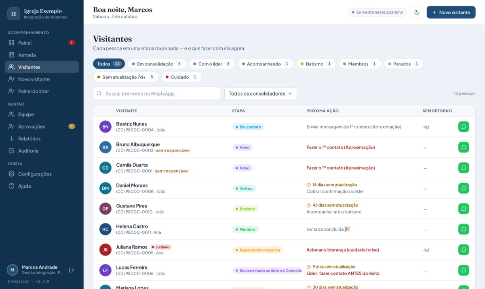
Toque em Visitantes no menu. Cada linha mostra a pessoa, o WhatsApp, o responsável, a etapa (etiqueta colorida) e a próxima ação, ou seja, o que precisa ser feito agora.
| Sinal na lista | Significado |
|---|---|
| Texto vermelho | A próxima ação é urgente (ex.: fazer o 1º contato). |
| “X dias sem atualização” | Ninguém registrou nada sobre essa pessoa há 7 dias ou mais. |
| “sem responsável” | Ninguém foi designado para cuidar da pessoa ainda. |
| cuidado | Pessoa sinalizada com cuidado/crise. |
| menor | Menor de idade: o contato é feito com o responsável. |
O integrador vê os visitantes pelos quais é responsável; o líder, os encaminhados ao seu grupo; quem supervisiona outras pessoas vê também os visitantes delas. Gestão e Pastores veem todos.
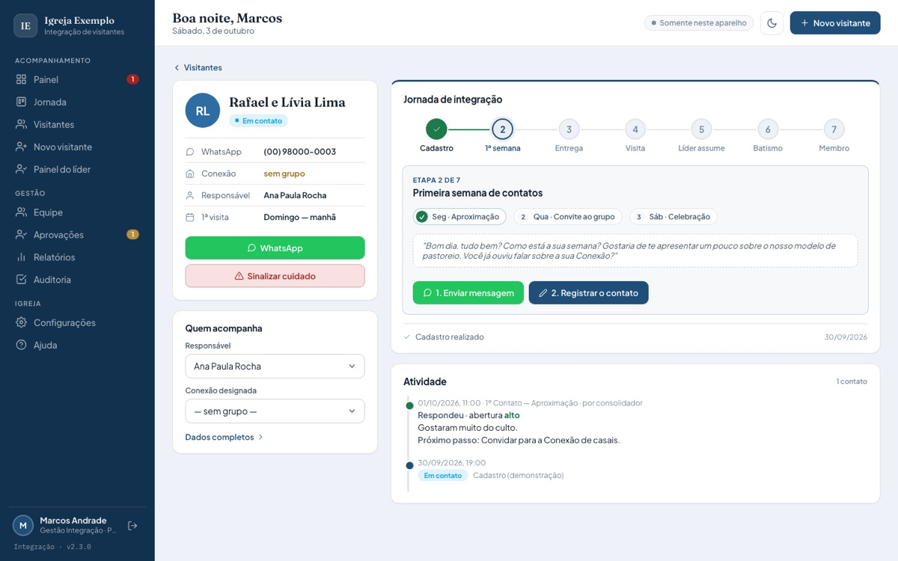
1 2 3 4 5 6 7 8No celular a ficha é a mesma, em uma coluna: primeiro a pessoa, depois a jornada, a atividade e, no fim, “Quem acompanha”.
Em Dados completos você edita todos os dados (contato, endereço, visita, batismo, membresia, preferências de contato e pedido de oração) e vê se há consentimento LGPD registrado. As alterações são salvas automaticamente, sem botão de salvar.
Este é o gesto mais importante do dia a dia: falou com a pessoa, registre. Leva menos de um minuto.
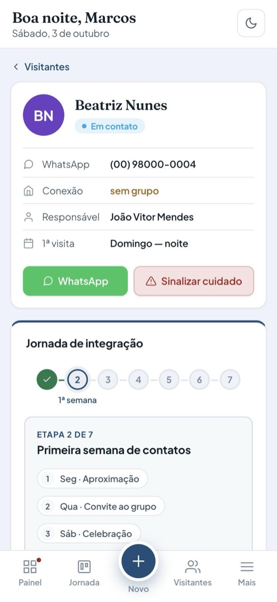
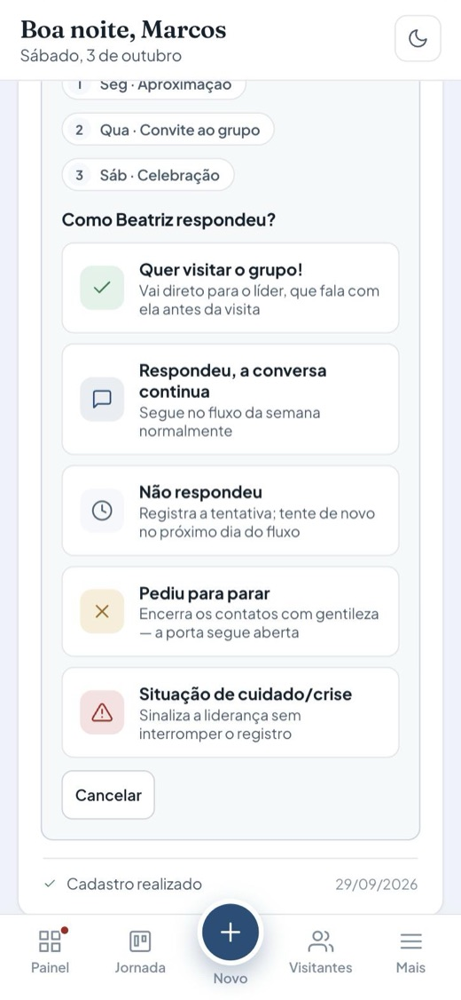
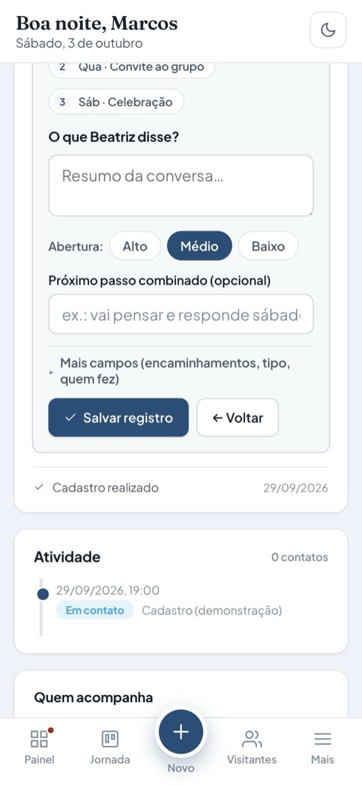
| Opção | Quando escolher | O que o sistema faz |
|---|---|---|
| Quer visitar o grupo! | A pessoa aceitou conhecer o grupo. | Encaminha ao líder (passo 3). |
| Respondeu, a conversa continua | Conversou, mas ainda não decidiu. | Registra e segue nos contatos da semana. |
| Não respondeu | Você mandou mensagem e não teve retorno. | Registra a tentativa na hora, sem mais perguntas. Tente de novo no próximo dia do fluxo. |
| Pediu para parar | A pessoa não quer mais ser contatada. | Encerra os contatos com gentileza; a porta segue aberta. |
| Situação de cuidado/crise | A conversa revelou sofrimento ou urgência. | Sinaliza a liderança sem interromper o registro. |
Precisa de mais detalhes? Toque em “Mais campos” para informar encaminhamentos, o tipo de contato e quem fez.
Um contato que não é registrado não existe para o resto da equipe. O registro protege a pessoa (ninguém manda mensagem repetida) e protege você (fica claro que você fez a sua parte).
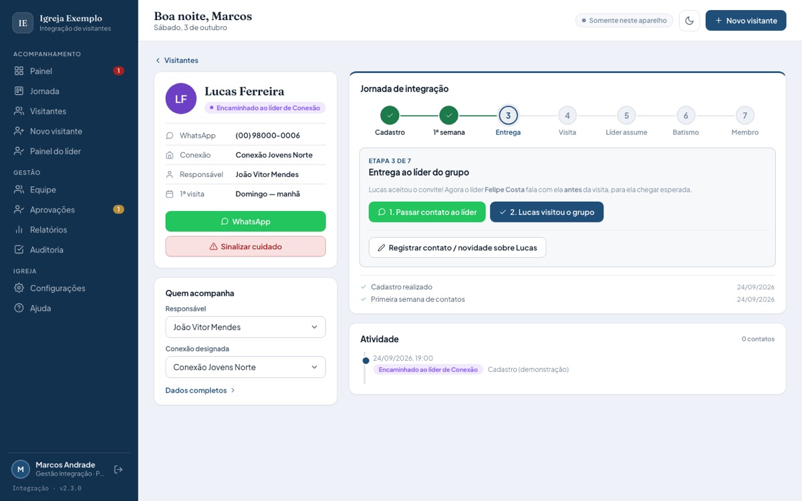
Depois da visita, o líder confirma que assumiu tocando em O líder confirmou que assumiu. Se ainda não assumiu, toque em Ainda não assumiu — aguardando e escreva o motivo. A pessoa fica Em espera, com o motivo guardado no histórico.
Daqui em diante o líder registra as novidades em Registrar contato / novidade sobre…. Se a pessoa parar de frequentar, use … parou de frequentar: ela volta para o acompanhamento do time de integração.
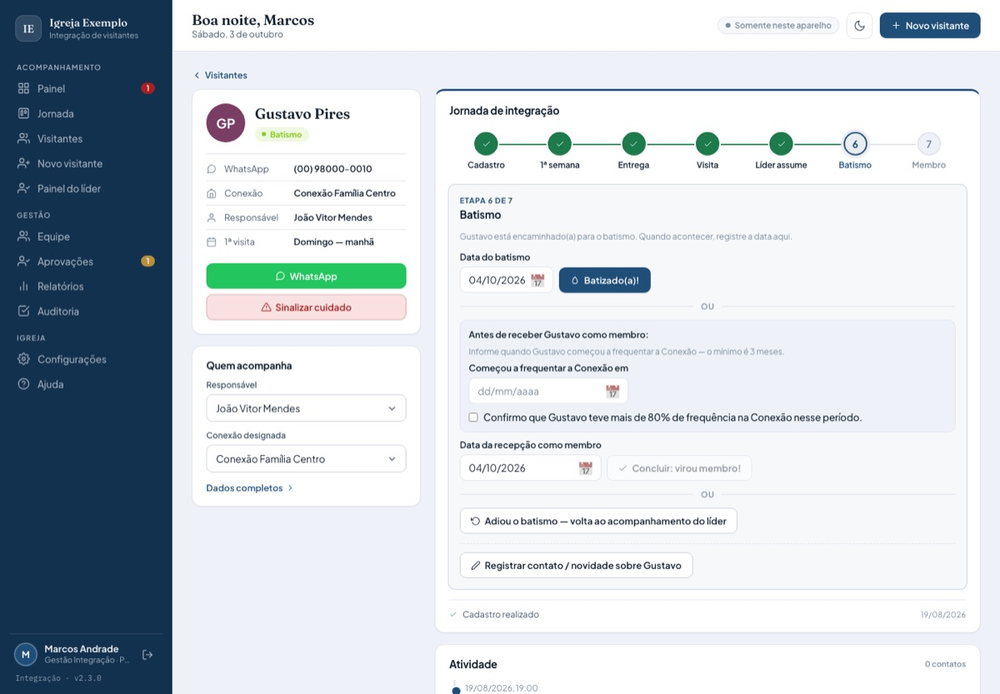
Antes de concluir, o sistema confere os requisitos definidos pela igreja. O padrão é:
Quem já é batizado não passa pelo batismo de novo: vai direto de “Líder assume” para “Membro”. Se o tempo mínimo ainda não foi atingido, é possível receber como exceção, e isso fica registrado no histórico.
| Situação | Como corrigir |
|---|---|
| Avancei a etapa sem querer | No fim do cartão da jornada, toque em Voltar para a etapa anterior. |
| A etapa está errada | Abra Dados completos → seção Acompanhamento → Marcou errado? → Corrigir para outro status…. |
| Responsável ou grupo errado | Na ficha, em Quem acompanha, escolha a pessoa ou o grupo certo. |
| Nome ou telefone com erro | Em Dados completos, corrija; salva sozinho. |
| Cadastro em dobro | Continue usando uma das fichas e encerre a outra pela seção Acompanhamento. |
Toda correção fica registrada no histórico da ficha, com quem fez e quando.
Quando uma conversa revela sofrimento, risco ou urgência, o cuidado vem antes do roteiro.
Havendo risco imediato à vida, oriente a procurar os serviços de emergência (SAMU 192, CVV 188). Esses registros são os mais sensíveis do sistema: só o pastor e o responsável direto os veem. Escreva com sobriedade e mantenha sigilo.
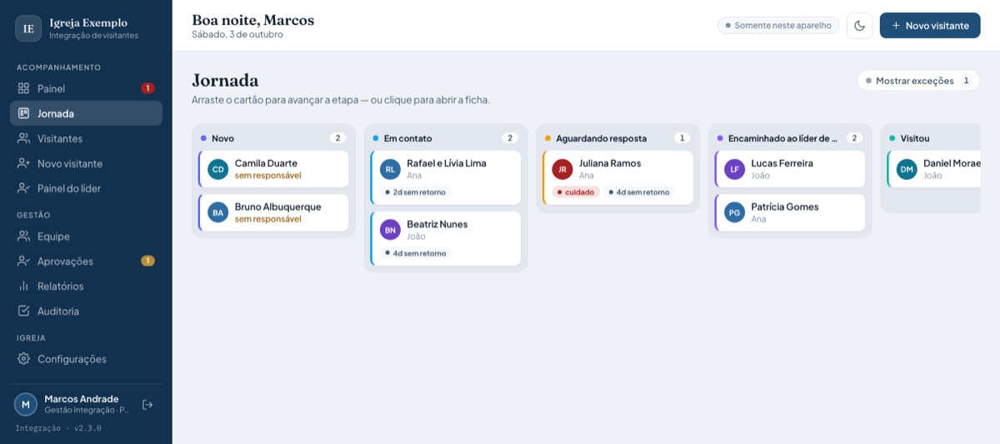
No quadro da Jornada, cada coluna é uma etapa. No computador você pode arrastar um cartão para a próxima coluna para avançar a pessoa; toque no cartão para abrir a ficha. Movimentos que pulam etapas são bloqueados, e o sistema explica o motivo. No celular, deslize o quadro para o lado para ver as outras colunas. O botão Mostrar exceções exibe as colunas Em espera, Recusou e Encerrado.
Ninguém precisa lembrar de tudo. O sistema avisa quem precisa agir: no sino, no Painel e, se você quiser, direto no celular.
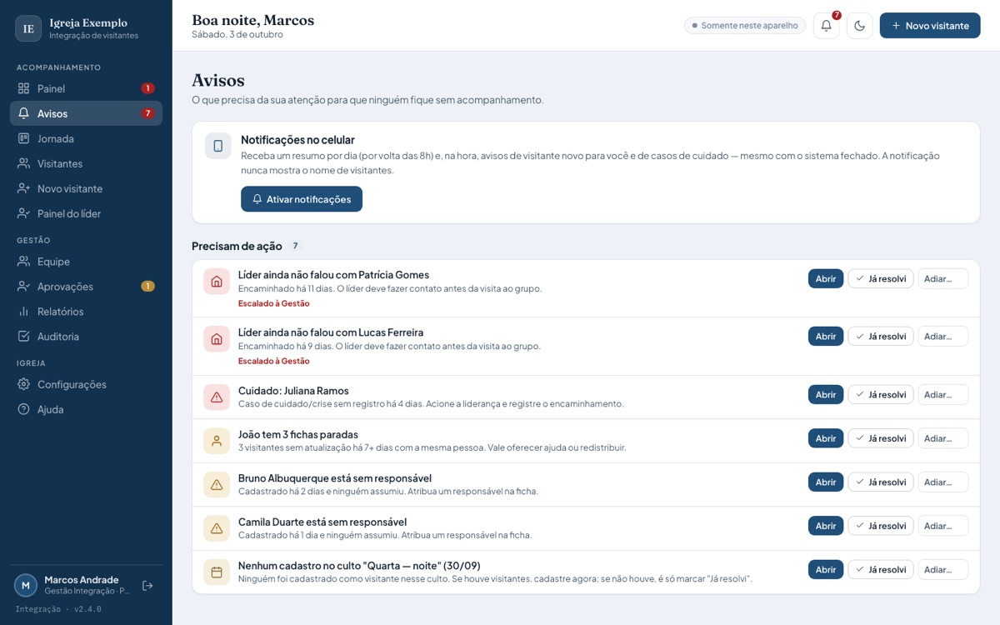
1 2 3 4 5 6 7| Aviso | Quando aparece | Quem recebe |
|---|---|---|
| Visitante sem responsável | 1 dia depois do cadastro sem ninguém assumir. | Gestão Integração |
| Novo visitante para você | Assim que a pessoa é entregue a você, até o 1º contato. Avisa na hora no celular. | O responsável |
| 1º contato atrasado | 2 dias sem nenhum contato registrado. | O responsável (e sobe, veja abaixo) |
| Contato pendente | 4 dias sem registrar contato enquanto a pessoa está em “Em contato” ou “Aguardando resposta”. | O responsável (e sobe) |
| Líder ainda não falou | 3 dias com a pessoa encaminhada ao líder e nenhum contato do líder. | O líder (e sobe ao responsável e à Gestão) |
| Resposta recebida | Outra pessoa (por exemplo, o líder) registrou uma resposta do visitante nos últimos 2 dias. | O responsável |
| Vai para “Em espera” | Faltam 3 dias para o prazo de silêncio terminar. Ainda dá tempo de um último contato. | O responsável |
| Cuidado / crise | Caso de cuidado sem registro. A primeira vez avisa na hora; depois, 1 dia sem registro. | Pastores e o responsável |
| Equipe parada | Ninguém da equipe registra contatos há 5 dias, havendo visitantes em acompanhamento. | Gestão e Pastores |
| Pessoa com fichas paradas | Uma mesma pessoa com 3 ou mais fichas sem atualização há 7+ dias. | Gestão, Pastores e o supervisor dela |
| Culto sem cadastro | Um culto passou (nos últimos 3 dias) e nenhum visitante foi cadastrado nele. É só para confirmar: pode ter sido um culto sem visitantes. | Gestão e Pastores |
Os prazos acima são os padrões. A Gestão pode ajustá-los em Configurações → Avisos (capítulo 28). Cada pessoa vê somente os avisos que cabem à sua função; os de cuidado/crise seguem a mesma regra de sigilo do restante do sistema.
Se o responsável não resolve, o sistema não repete o mesmo aviso todo dia: ele sobe de nível.
Se o aviso também foi para o seu líder ou para a Gestão, ele continua aparecendo para eles. E o que você adia ou resolve vale também nos seus outros aparelhos.
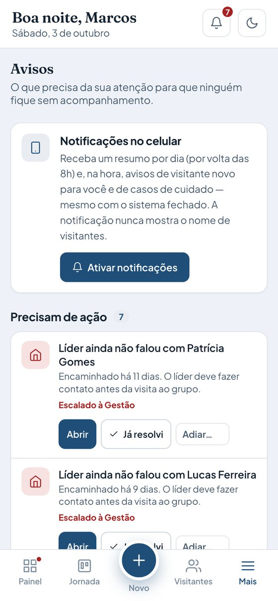
Com as notificações ligadas, o aviso chega ao seu celular mesmo com o sistema fechado, como uma mensagem. É opcional e cada pessoa liga no próprio aparelho.
| Notificação | Quando |
|---|---|
| Resumo do dia | Por volta das 8h, se houver avisos para você. No máximo um por dia. |
| Novo visitante para você | Na hora (até 30 minutos depois de a pessoa ser entregue a você). |
| Caso de cuidado | Na hora, para os pastores e o responsável. |
| Visão da Gestão | No resumo de segunda-feira. |
As notificações só saem entre 7h e 21h. E, como aparecem na tela bloqueada, nunca mostram o nome de um visitante: dizem apenas quantos avisos você tem. O nome você vê ao abrir o sistema.
Para desligar, volte ao cartão e toque em Desativar. Se o botão não aparecer, o cartão explica o motivo: no iPhone, falta colocar o sistema na Tela de Início; se as notificações foram bloqueadas, é preciso liberá-las nos ajustes do navegador ou do ícone instalado.
Encontre a sua função e siga o roteiro. Quem tem mais de uma função soma os acessos.
Recebe o visitante no dia do culto e faz o cadastro na hora.
É o responsável pela pessoa na primeira semana: faz os contatos e a encaminha ao grupo.
Recebe a pessoa no grupo, fala com ela antes da visita e a acompanha até virar membro.
Coordena todo o ministério: distribui, acompanha os números, aprova acessos e configura o sistema.
Dá cobertura pastoral ao ministério.
Áreas restritas a Gestão Integração e Pastores.
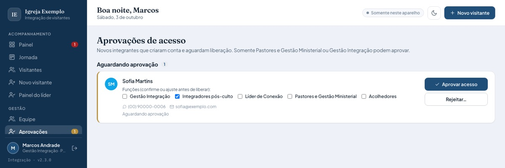
O acesso dá visão sobre dados pessoais de visitantes. Na dúvida, confirme com a pessoa antes de aprovar. Até a aprovação, quem pediu acesso não consegue ler nenhum dado da igreja.
A Equipe reúne todas as pessoas que cuidam dos visitantes. Daqui a liderança vê quem já tem acesso, ajusta funções e define a quem cada pessoa responde.
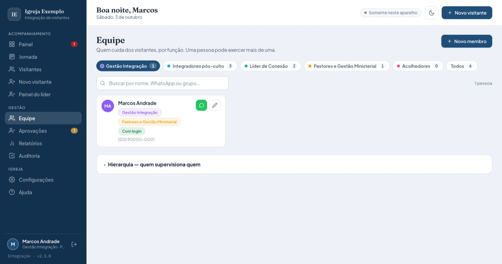
1 2 3 4 5 6 7 8 9 10Se você mudou algo e tentar sair, o sistema pergunta antes de descartar as alterações.
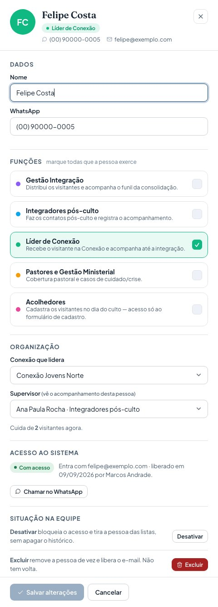
Toque em + Novo membro, preencha nome e WhatsApp (e-mail é opcional) e marque as funções. É um cadastro rápido, sem login. Para a pessoa ter a própria senha, envie a ela o link de Criar meu acesso: a liderança aprova em seguida (capítulo 26).
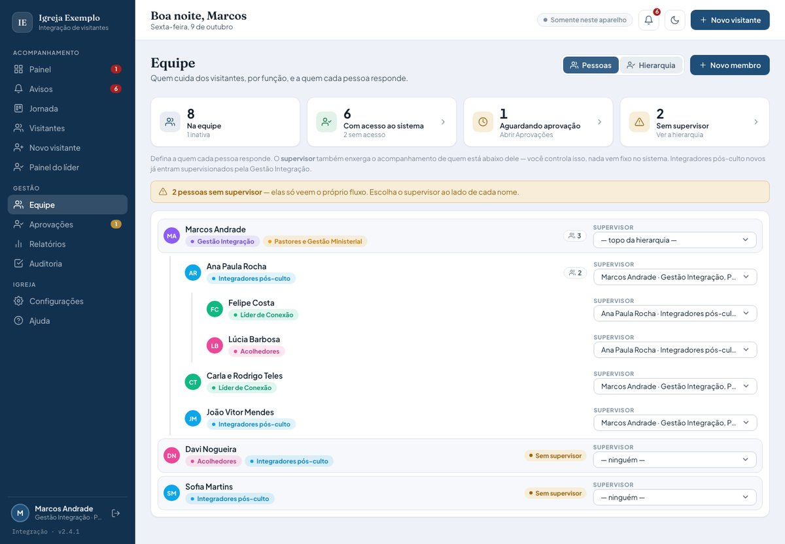
1 2 3 4 5O sistema impede ciclos: ninguém pode ser supervisionado por alguém que está abaixo dele. Integradores pós-culto novos já entram supervisionados pela Gestão Integração.
| Ação | Quando usar |
|---|---|
| Desativar | A pessoa saiu por um tempo. O acesso é bloqueado, mas o histórico fica guardado e dá para reativar depois. |
| Excluir | Remoção definitiva. Os visitantes que ela acompanhava ficam sem responsável e precisam ser redistribuídos. O login é o mesmo do Check-iFE e do Louvor: excluir apaga a conta e a pessoa perde o acesso aos três sistemas (o cadastro dela no Check-iFE não é apagado, só fica sem login). Prefira Desativar. |
As duas ações ficam no fim do painel de edição, em Situação na equipe, e o painel mostra quantos visitantes a pessoa acompanha no momento.
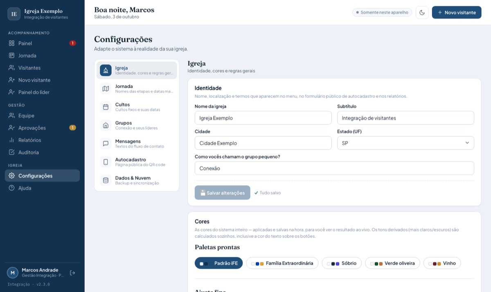
As Configurações adaptam o sistema à realidade da sua igreja. Escolha a seção no menu da esquerda (no celular, nas pílulas do topo):
| Seção | O que você ajusta |
|---|---|
| Igreja | Nome, subtítulo, cidade e estado; como vocês chamam o grupo pequeno (Conexão, Célula, PG…); as cores do sistema; o prazo de dias sem resposta até “Em espera” e as opções de “Como conheceu a igreja?”. |
| Jornada | Os nomes das etapas e das funções; as datas marcadas de batismo e de recepção de membros; os requisitos para receber como membro (tempo mínimo e frequência). |
| Cultos | Os cultos fixos (dia e horário), usados no cadastro para registrar a 1ª visita. |
| Grupos | Os grupos, com bairro, perfil, dia e horário e os líderes (até 2). Dá para buscar e editar cada um. |
| Mensagens | Os textos prontos do fluxo de contato. Use as variáveis (como o nome da pessoa) para personalizar. |
| Avisos | Os prazos dos avisos (quantos dias até avisar o responsável, até subir ao líder e à Gestão), a hora do resumo diário e o liga/desliga geral. |
| Autocadastro | O QR code e o link público do visitante: Imprimir QR, Copiar link, prévia e quais perguntas aparecem no formulário. |
| Dados & Nuvem | A situação da sincronização, a exportação/restauração de backup e a zona de perigo. |
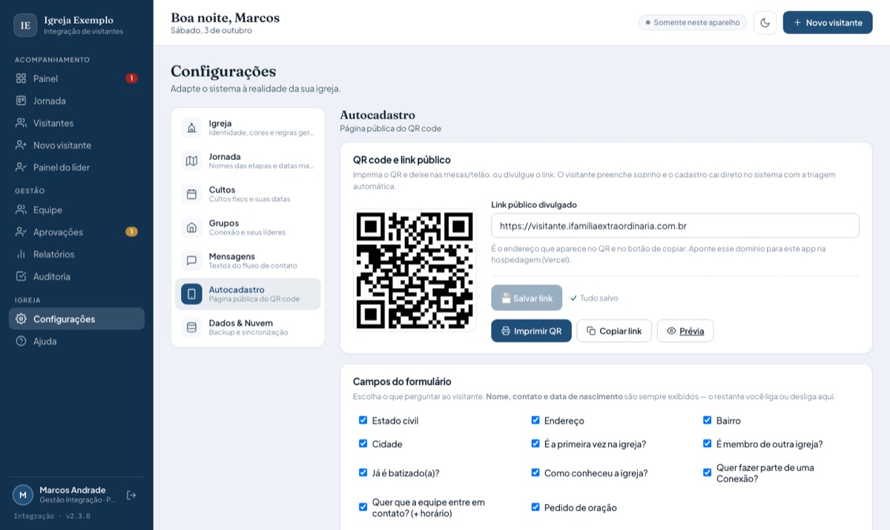
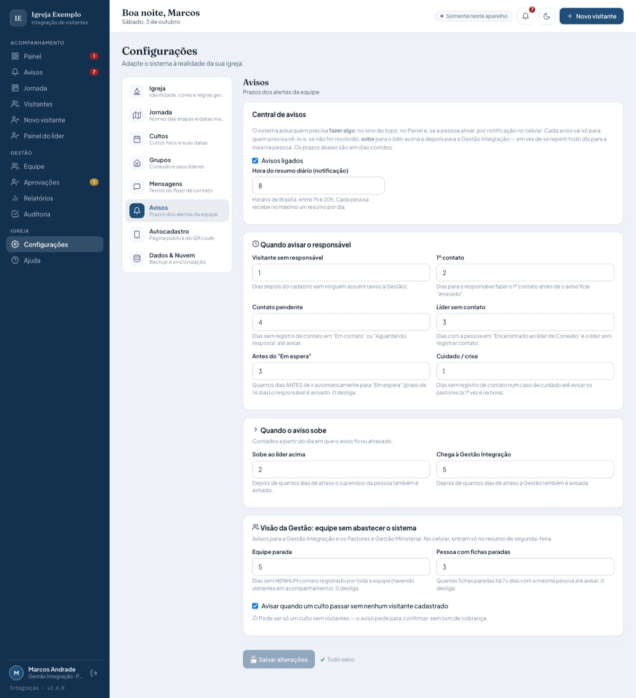
Em Avisos, cada campo é um número de dias corridos. Reduzir o prazo faz o sistema avisar mais cedo; aumentar, mais tarde. Restaurar prazos padrão volta tudo ao original, e a opção Avisos ligados desliga o sistema de avisos inteiro (sino, Painel e notificações). Confirme o Salvar alterações.
Nas seções com botão Salvar alterações, as mudanças só valem depois de salvar. O aviso “Tudo salvo” confirma.
“Zerar todos os dados” apaga visitantes, contatos e cadastros em todos os aparelhos. Não tem volta. Exporte um backup antes de qualquer ação desse tipo.
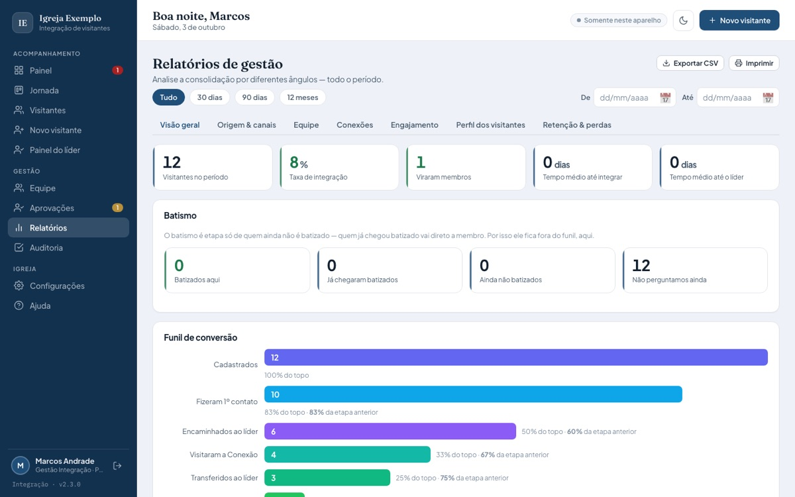
A Auditoria registra automaticamente quem fez o quê, e quando: aprovações, mudanças na equipe, correções de etapa, acessos a fichas com cuidado ativo e outras ações sensíveis. Busque por pessoa, ação ou visitante e filtre por período. Não há como apagar ou editar esses registros pela tela: eles protegem a equipe e os visitantes.
Boas práticas de privacidade, as dúvidas mais comuns e o que fazer quando algo não sai como esperado.
O sistema guarda dados pessoais de pessoas que confiaram na igreja. Cuidar bem desses dados também é cuidar delas.
Cada igreja vê somente os próprios dados, e cada pessoa da equipe vê apenas o que a sua função permite.
Não. O sistema abre no navegador. Para ter um ícone na tela do celular, veja o capítulo 8.
Sim. Tudo é salvo na nuvem automaticamente; quem tiver permissão vê os mesmos dados atualizados.
Não. Se estiver sem internet, o registro fica guardado no aparelho e é enviado quando a conexão voltar. Antes de fechar, confira se não aparece “Sem conexão”.
Você vê apenas quem está sob o seu cuidado. Confira também se não há um filtro ligado (pílula de etapa, busca ou responsável). Se for necessário, peça à Gestão para designar a pessoa a você.
Registre o novo contato normalmente; o fluxo volta a andar a partir do que você registrar.
Sim. Entre com a mesma conta nos dois; tudo fica sincronizado.
O menu mostra só as áreas da sua função. Relatórios, Equipe, Aprovações, Auditoria e Configurações são de Gestão e Pastores.
Porque o aviso subiu: o responsável não resolveu a tempo e o sistema chamou o líder acima e, depois, a Gestão. O aviso diz “Escalado ao líder” ou “Escalado à Gestão” (capítulo 24).
As notificações no celular, sim: toque em Desativar na página Avisos. O sino e a lista fazem parte do sistema. Se os prazos estiverem apertados demais, peça à Gestão para ajustá-los em Configurações → Avisos.
É normal: cada igreja configura os próprios nomes de grupos, etapas e funções. O funcionamento é o mesmo.
| O que aparece | O que fazer |
|---|---|
| “Quase lá!” ao entrar | Seu acesso ainda não foi aprovado. Aguarde ou avise a Gestão. |
| “Confirme seu e-mail” | Abra o e-mail que enviamos e toque no link (veja também o spam). Se não chegou, use Reenviar e-mail. |
| “O link expirou ou já foi usado” | Se você já confirmou o e-mail, é só entrar com a sua senha. Se não, peça um novo link na tela de entrada. |
| Senha incorreta | Confira as maiúsculas e minúsculas (use o olho para ver o que digitou) ou use “Esqueci a senha”. |
| O e-mail de nova senha não chega | Procure no spam e confira se digitou o e-mail certo. Espere alguns minutos e tente de novo. |
| Sem conexão no topo | Verifique a internet. Toque na etiqueta para tentar de novo. Seus registros não se perdem. |
| A tela ficou estranha ou travou | Recarregue a página (puxe a tela para baixo no celular ou aperte F5 no computador). |
| “Você não tem acesso à ficha desta pessoa” | A pessoa não está sob o seu cuidado. Peça à Gestão para designá-la a você, se for o caso. |
| Não aparece o botão para ativar as notificações | No iPhone, coloque o sistema na Tela de Início e abra por esse ícone (capítulo 8). A página Avisos explica o motivo do seu caso. |
| “Notificações bloqueadas” | Libere nos ajustes do navegador ou do ícone instalado e volte à página Avisos. |
| A notificação de teste não chega | Confira se o celular não está em “Não perturbe” e se o sistema foi aberto pelo ícone da Tela de Início (iPhone). Desative e ative de novo. Se continuar, avise a Gestão. |
| Recarregou sozinho depois de uma atualização | É normal: o sistema foi atualizado e carregou a versão nova. Continue de onde parou. |
Se o problema continuar, fale com a Gestão Integração da sua igreja informando: o que você estava fazendo, a mensagem que apareceu (um print ajuda, desde que não mostre dados de visitantes) e a versão do sistema, que aparece no pé do menu (ex.: “Integração · v2.6.0”).
“Não estamos falando de um produto, e sim de pessoas.”
Integração de Visitantes · Igreja Família Extraordinária
As imagens deste manual usam uma igreja e pessoas fictícias.